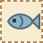
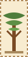
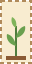
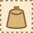
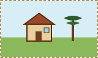

Modelo de artigo
Da Vale das Araucárias Wiki
Nome do item é um item do mod Vale das Araucárias. Escreva aqui uma introdução curta.
Conteúdo
Descrição
Texto exibido no jogo.
Obtenção
| Local | Estação | Preço |
|---|---|---|
| Lago da Montanha | 100g |
Usos
- Link para outra página: Peixes.
- Página ainda não publicada: Nome da página.
Use este aviso para conteúdo planejado. Outros tipos: aviso-info, aviso-implementado, aviso-removido.
Etiquetas de situação: Implementado Planejado Não confirmado Retirado
Imagens provisórias disponíveis

imagem-padrao.svg 
imagem-peixe.svg 
imagem-arvore.svg 
imagem-planta.svg 
imagem-personagem.svg 
imagem-alimento.svg 
imagem-item.svg 
imagem-local.svg